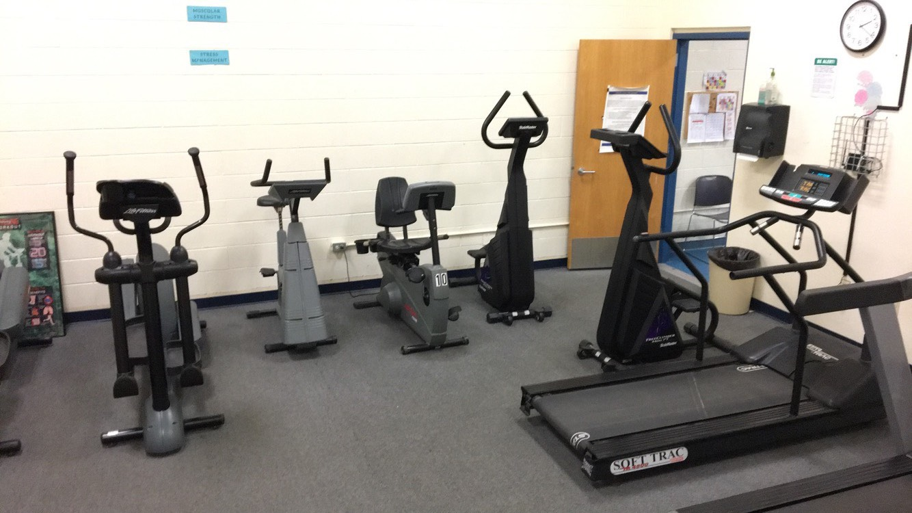

1 / 3

2 / 3

3 / 3

By Kinsey Ogden
Tucked away in a crevice of the Dunn Gym that is rarely explored lies a room that most students don’t even know about until their sophomore year at AHS. The fitness room is guarded by heavy, blue double doors with a sign warning against using the room without a teacher.
Once an electronic badge allows you through, fourteen exercise machines used by up to five classes every day are unveiled. The machines with gray plastic casing and black adjustable seats line the walls, creating a clear path of gym mats from the entrance to the teacher’s desk.
Two more rooms branch off at the end and create an even bigger world of personalized workouts: one containing thirteen cardio machines, varied from spin machines to compound rowers, and the other housing a variety of weights and extra equipment.
Since 1998, Personal Fitness and Wellness classes at AHS have provided students with an individualized exercise experience. Ms. Emery, AHS’s Personal Fitness teacher, said that in her class, “The sophomore students get a thorough foundation of understanding the concepts, the use of machines and free weights, along with a lot of assessments.”
To fulfill the physical education graduation requirement, rising sophomores are given a choice between Activity Fitness, a more competitive team-based class, and Personal Fitness and Wellness I. In Personal Fitness, sophomores learn about the cardio machines and weights housed in the fitness room, but the classes are still structured to test growth in strength over the semester. Students participate in pull-up assessments, circuit training, and interval training throughout their semester in the fitness room.
Meanwhile, juniors and seniors can choose to take Personal Fitness and Wellness II, which allows students more freedom with their personalized fitness programs. Emery still grades students based on their progress and effort, which they can track through notes on their phones, apps, or the workout tracking papers offered.
Not only are students able to work on their physical health, but their mental health is strengthened as well. Emery stated, “By the end of the semester [students’] confidence has been boosted, they can physically see the changes they have made, and mentally/emotionally [they] have an overall mindfulness of stress management.”
Students also are able to have a more personalized experience with working out and are able to adjust their training based on what works for them and what they are able to do. One sophomore, Hannah Rose, mentioned how she prefers Personal Fitness since it means “interacting more with the teachers because it’s more of a one-to-one basis.”
Similarly, Ms. McVeigh, who teaches health classes and Activity Fitness, talked about how in other classes, “it’s harder for the instructor to give one-on-one individualized attention to someone,” but in Personal Fitness classes, the instructor can notice and “change things a little bit based on...what [someone’s] needs are and not the needs of a class.” For example, when a student wants to work on certain muscles or a particular area of their body, the instructor is able to give them advice on how to reach their personal goals instead of having a single common goal for the whole class.
According to McVeigh, Personal Fitness isn’t the only way for kids to use the fitness room, since it has also been open “for athletics or athletic teams to be able to use it to supplement their practice schedule.” In the beginning, it wasn’t open to other students, with the only students having access outside of school hours being those involved in school athletics.
However, McVeigh stated that “over the last 15 years or so...they’ve tried to open it after school so that kids can also utilize it outside of P.E. and outside of athletics.”
Students are currently able to access and utilize the room, according to Emery. Since early February, the fitness room is open on Tuesdays & Thursdays from 2:15 to 3:30 p.m., granting access to all students who wish to exercise without a gym membership or any fees.
Personal Fitness classes aren’t the only way the room is being used. Emery stated that “students from the Excel Program & Adapted PE also use the fitness room.” This way, Excel students, who are developmentally delayed or impaired, are able to participate in Personal Fitness as well through an adapted program and are able to experience the benefits of the class. There is also a PE buddy system in place where a student can apply to be paired with an Excel student in gym in order to give Excel students the opportunity to spend class one-on-one with another student at AHS while also participating well in PE.
According to Emery, since Personal Fitness has been introduced into the school, it has been “an option for those students who find an activity PE class too much for them. This is a safe haven where you can have the choice to socialize or not.”
By Kinsey Ogden
The Andover freshman field hockey had a great, undefeated season this fall.
The field hockey season has come to an end this past month and the freshman field hockey team went through the season without a loss and seemed to work well on the field. When asked what qualities may have attributed to their victory, team member Livia Iwanicki said “I think we try to work together… We all like getting the ball, obviously, and we all like trying to get a goal, but we all work together and we have to be a family”.
According to the coach, Catherine Gross, “If the girls continue to work during the off-season,...they will have a great JV season”. Unfortunately, according to Sophia Polacke, some players may not try out for the JV team next year, since “some people might want to explore other sports”, but there is still a chance for most players to return to the game next year. Since coach Catherine Gross confirmed that “the girls on the freshman team have a strong chance of making Junior Varsity next year”, we know that the team could bring their talent and hard work to the JV team, but it is their choice.
Gross also told me about how they “had 21 girls at the start”, but “one girl [moved] up to JV halfway through the season”, meaning that the team and its players had potential from the start.
Players Livia Iwanicki and Sophia Polacke told me that they “played 17 [games]” and won “all of them but four” and Coach Gross said that “it takes dedication and perseverance to get to this point”. She thought that the team’s success could also be attributed to the fact that they had passion and “their passion for the game and for being a part of the team was obvious to anyone who came to our games”. They also “knew how to balance working hard and having fun”, so not only did the girls play hard and work well, but they were also able to have an enjoyable time while doing it.
Overall, it seems like the freshman field hockey team did well with their first year, and they will hopefully do even better in the years to come.